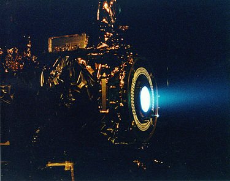
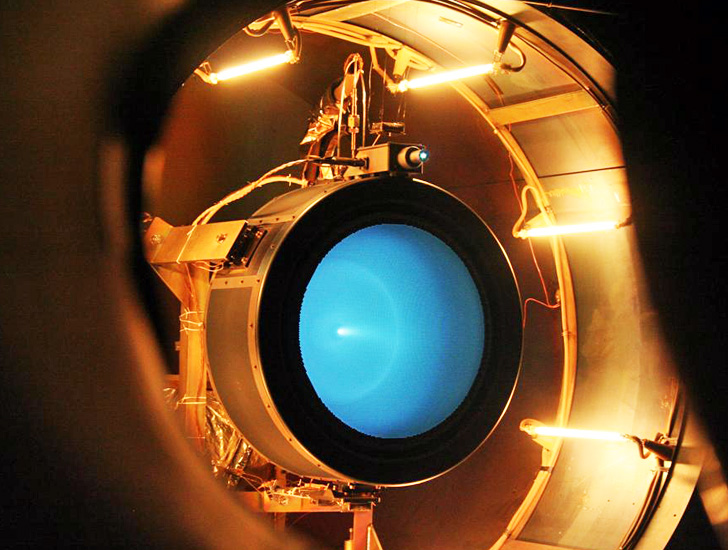
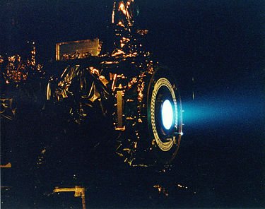
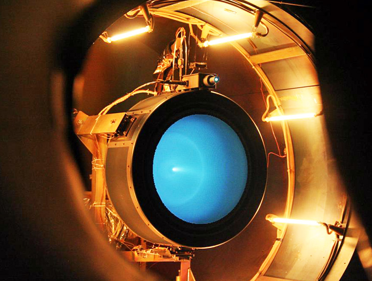

• 이온 로켓 엔진
다트의 핵심 부품은 추진력을 제공하는 이온 로켓 엔진인 넥스트(NEXT·NASA Evolutionary Xenon Thruster)다. 넥스트는 6.9㎾의 전력을 소모해 제논 입자를 시속 14만5,000㎞의 속도로 발사한다. 덕분에 이 엔진은 과거 던(DAWN) 탐사선이 사용했던 이온 엔진보다 3배나 강력한 236mN의 추력을 낼 수 있다. 수명도 매우 길어 지상에서 테스트한 프로토타입 엔진은 무려 5.5년(4만8,000시간) 동안 고장 없이 작동했다. 우주선에 탑재되는 것은 처음으로 디모포스 충돌 임무가 사실상 첫 실전 테스트인 셈이다.